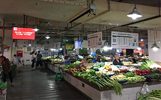

新闻

联合青羊区开创菜市智慧监管新模式

菜市场作为广大老百姓“菜篮子”的主要流通和消费场所。“食以安为先”，食品安全关系到广大人民群众的身体健康、生命安全和社会稳定，也是区委、区政府及市委、市政府非常关心的重大民生问题。
尤其是国家《食品安全法》及国家食品药品监管总局20号令《食用农产品销售质量安全监督管理办法》的出台， 从法律层面做了详细规定和监管要求，但长久以来，菜市场形成了环境脏乱、经营主体多变、价格不透明、食品溯源及其他信息不公示或者公示不规范，加之交易品种繁多， 食品安全输入性风险很高，老百姓意见较大，凡此种种问题一直未得到彻底有效解决，成为政府监管的顽疾和难题。
针对上述情况，四川慧威仕科技有限公司数十名互联网领域和食品检测领域资深人员历时2年，自主研发设计的针对农贸市场食品安全监管的大数据平台，该平台依托互联网+和大数据分析， 将快检数据、溯源数据、经营主体信息通过自主研发的智能手持一体机迅速录入并上传到智慧菜市云数据中心，形成信息和数据的存档、分析和发布等相关后台处理；通过智慧菜市云平台终端发布机， 对快检数据、溯源数据、食品安全法律法规、食安科普、健康用药、政府公益广告、食药监管动态以及市场管理经营信息进行发布；最后根据应用需要通过云平台系统形成大数据分析，为政府监管提供决策依据，为消费者提供安全预警。 同时，为了配合智慧菜市项目的建设，四川慧威仕科技有限公司还对市场的标示标牌进行了规范性改造。
目前，以益民菜市长顺街店和科联路菜市为智慧菜市建设样板，一是初步完成了智慧云平台的硬件安装和调试， 实现了相关数据的采集、上传和系统分析。除此之外，系统已经汇集了快检信息、溯源信息、公益宣传、市场经营、监管动态、食药科普知识等信息和节目形式， 通过云平台终端发布机进行了试运行发布；二是已经完成标示标牌的升级改造， 将二维码溯源、经营主体、证照、快捷支付、今日菜价等信息整合到一块统一规范的公示牌上，改变了格式不一、信息混乱、悬挂不美、支付不畅等诸多问题；通过一系列改造，广大群众和市场经营方非常满意。 通过辖区两个样板菜市的运行，不断对系统进行优化和改进，逐步覆盖全区，实现菜市的智慧监管，构建全区“食美药安，魅力青羊”的良好社会氛围，同时为创建四川省食品安全示范区以及助力成都市创建全国食品安全示范城市贡献力量。
针对上述情况，四川慧威仕科技有限公司数十名互联网领域和食品检测领域资深人员历时2年，自主研发设计的针对农贸市场食品安全监管的大数据平台，该平台依托互联网+和大数据分析， 将快检数据、溯源数据、经营主体信息通过自主研发的智能手持一体机迅速录入并上传到智慧菜市云数据中心，形成信息和数据的存档、分析和发布等相关后台处理；通过智慧菜市云平台终端发布机， 对快检数据、溯源数据、食品安全法律法规、食安科普、健康用药、政府公益广告、食药监管动态以及市场管理经营信息进行发布；最后根据应用需要通过云平台系统形成大数据分析，为政府监管提供决策依据，为消费者提供安全预警。 同时，为了配合智慧菜市项目的建设，四川慧威仕科技有限公司还对市场的标示标牌进行了规范性改造。
目前，以益民菜市长顺街店和科联路菜市为智慧菜市建设样板，一是初步完成了智慧云平台的硬件安装和调试， 实现了相关数据的采集、上传和系统分析。除此之外，系统已经汇集了快检信息、溯源信息、公益宣传、市场经营、监管动态、食药科普知识等信息和节目形式， 通过云平台终端发布机进行了试运行发布；二是已经完成标示标牌的升级改造， 将二维码溯源、经营主体、证照、快捷支付、今日菜价等信息整合到一块统一规范的公示牌上，改变了格式不一、信息混乱、悬挂不美、支付不畅等诸多问题；通过一系列改造，广大群众和市场经营方非常满意。 通过辖区两个样板菜市的运行，不断对系统进行优化和改进，逐步覆盖全区，实现菜市的智慧监管，构建全区“食美药安，魅力青羊”的良好社会氛围，同时为创建四川省食品安全示范区以及助力成都市创建全国食品安全示范城市贡献力量。